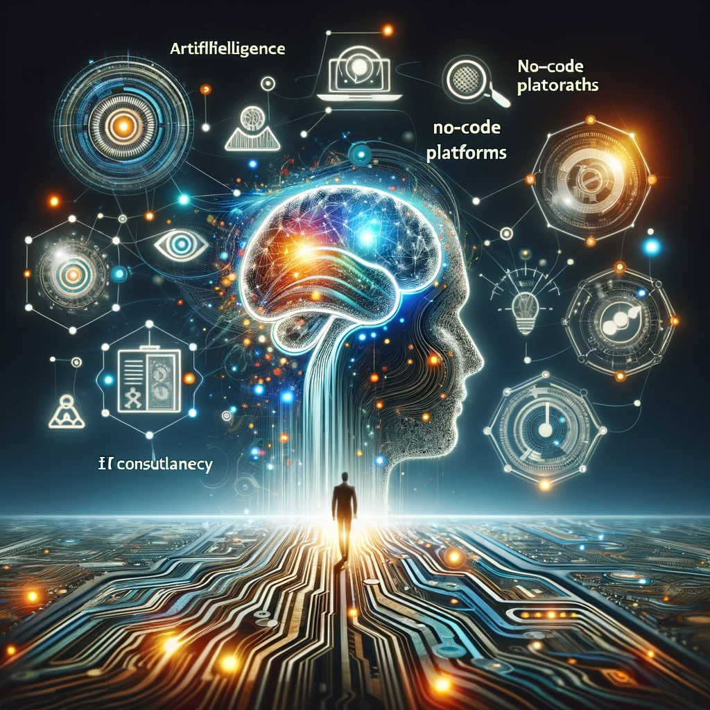

Impact on Human Life
Modification of Behavior and Decisions
The rapid development of technology, especially in the field of artificial intelligence (AI) and machine learning (ML), has been one of the defining characteristics of our era. These technologies have a significant impact on the way humans form their behavior and make decisions. Through the analysis of data and algorithms, these technologies can subtly influence our preferences and options, affecting the way we interact with our surrounding environment and make decisions in different contexts. An important aspect of behavior modification is personalization and recommendations. AI algorithms analyze data about our online behavior, browsing history, previous searches, and interactions with different platforms and services to provide us with personalized content, products, or services. This can subtly influence our purchasing decisions and preferences, guiding us towards certain choices and away from others. For example, on e-commerce platforms, AI algorithms can offer product suggestions based on our purchase history and previous preferences. These personalized recommendations can influence our buying decisions and increase the likelihood of making a purchase. At the same time, on social media platforms, AI algorithms can personalize our news feed and updates, presenting us with content that corresponds to our interests and preferences, thus influencing the way we perceive and interact with information. Moreover, AI and ML technologies can influence our behavior and decisions through targeted advertising. AI algorithms analyze data about our online behavior to identify our interests and preferences for displaying relevant and personalized ads. These targeted ads can subtly influence our purchasing decisions and consumption behavior. In conclusion, the modification of human behavior and decisions through AI and ML technologies is a complex phenomenon that involves a series of mechanisms and processes. These technologies can subtly influence our preferences and options, affecting the way we interact with our surrounding environment and make decisions in different contexts.

Social Interactions and Identity
Tehnologiile de inteligență artificială (IA) și mașinărie de învățare automată (ML) au transformat modul în care oamenii interacționează între ei și își construiesc identitatea în era digitală. Aceste tehnologii facilitează comunicarea și interacțiunea online, permițând oamenilor să se conecteze și să comunice în moduri noi și inovatoare. Un aspect important al interacțiunilor sociale este utilizarea asistenților virtuali și a altor aplicații AI pentru comunicare și interacțiune. De exemplu, asistenții virtuali precum Siri, Alexa și Google Assistant sunt folosiți pentru a răspunde la întrebările noastre și a efectua sarcini simple, precum programarea alarmelor sau a timerelor. Aceste tehnologii ne permit să interacționăm cu dispozitivele noastre inteligente într-un mod natural și intuitiv, facilitând gestionarea vieții noastre cotidiene. În plus, tehnologiile AI și ML au transformat modul în care comunicăm și interacționăm pe platformele de social media. Algoritmii AI analizează datele despre comportamentul nostru online pentru a ne identifica interesele și preferințele și pentru a ne personaliza fluxul de știri și actualități. Acest lucru poate influența subtil modul în care ne percepem și interacționăm cu informațiile și cu ceilalți utilizatori online. Mai mult decât atât, tehnologiile AI și ML pot influența modul în care ne construim identitatea online și offline. De exemplu, algoritmii de recunoaștere facială sunt folosiți pentru a autentifica utilizatorii pe platformele de social media și pentru a personaliza experiența lor online. Acest lucru poate influența subtil modul în care ne percepem și prezentăm identitatea noastră online, afectând astfel modul în care ne construim și comunicăm identitatea noastră personală și socială. În concluzie, impactul tehnologiilor de IA și ML asupra interacțiunilor sociale și a identității umane este vast și profund, schimbând modul în care ne conectăm és comunicăm între noi és cum ne percepem és prezentăm identitatea noastră personală és socială în era digitală. Aceste tehnologii au deschis noi posibilități és oportunități în comunicare és interacțiune és continuă să inspire inovația és dezvoltarea în acest domeniu.
Ethical Challenges
The use of artificial intelligence (AI) and machine learning (ML) technologies raises numerous ethical and moral challenges, often involving complex dilemmas related to data privacy, algorithmic bias, and the impact on individual autonomy. A major aspect of ethical challenges is data privacy and security. AI and ML technologies often involve the collection, storage, and massive analysis of personal data, raising concerns about data protection and individual privacy. For example, facial recognition systems can be used for extensive surveillance, potentially endangering individual intimacy and freedom. Additionally, AI and ML technologies can be susceptible to discrimination and algorithmic bias, reflecting unfair prejudices and stereotypes. AI algorithms are trained on existing data, which can reflect and perpetuate inequalities and discrimination in society. This can lead to unfair or discriminatory decisions in areas such as recruitment, credit assessment, and criminal justice, affecting equality and individual rights. Moreover, AI and ML technologies can have a significant impact on individual autonomy and human freedom. For instance, recommendation and filtering AI systems can create "filter bubbles" and "confirmation echoes," limiting users' exposure to different opinions and perspectives. This can restrict access to diverse information and subtly influence users' opinions and behavior, affecting their freedom of expression and thought. In conclusion, the ethical challenges associated with the use of AI and ML technologies are complex and diverse, often involving dilemmas related to data privacy, algorithmic bias, and the impact on individual autonomy. Addressing these challenges requires special attention and a firm commitment to ensure that these technologies are used responsibly and ethically, in line with the principles of human rights and social justice.
Datcu Daniel-Alexandru
Version: 2.0
Copyright © 2024